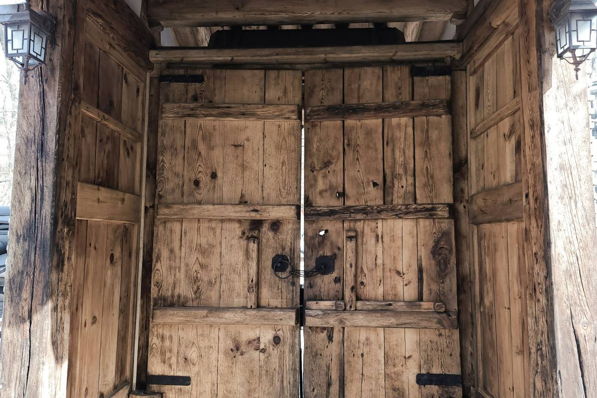
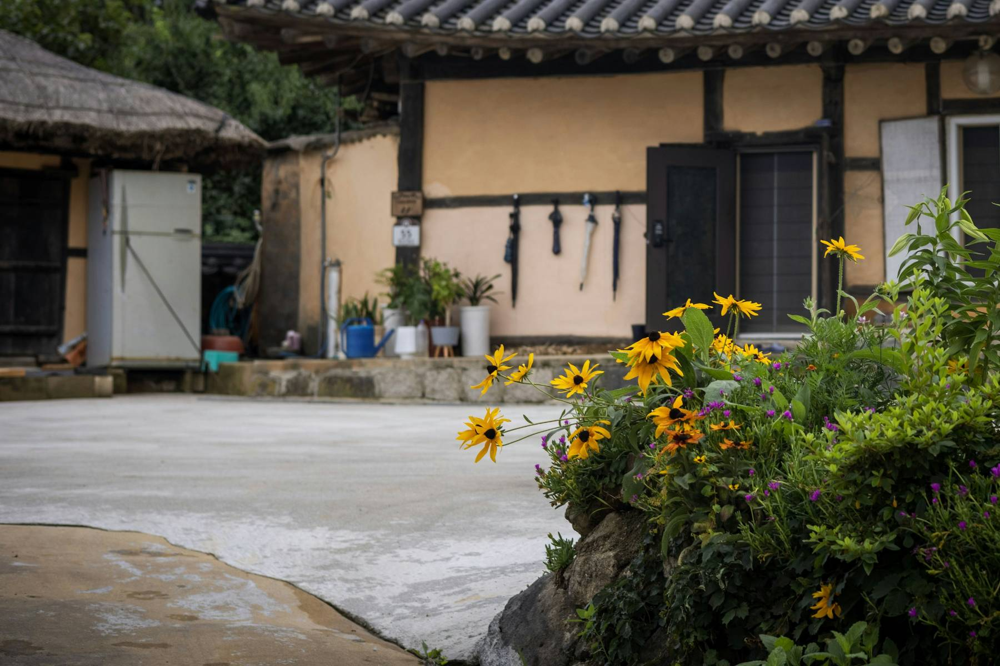

충남 홍성에서 시골집 고치기 15년
농가주택 단열·창호·지붕, 재래식 부엌·화장실 입식으로, 기름보일러 교체. 견적은 현장에 가서 보고 드립니다.
전화 010-0000-0000 · 일요일은 쉽니다

"공사 중에는 사진 찍어서 카톡으로 보내 드려요. 멀리 사시는 자녀분들이 좋아하십니다."— 박섬돌 대표
시안 A는 첫 화면과 분위기를 보여 드리는 견본입니다. 고르시면 하는 일·상태 정리 도구·진행 순서·자주 묻는 질문을 이 모양으로 이어 붙입니다.